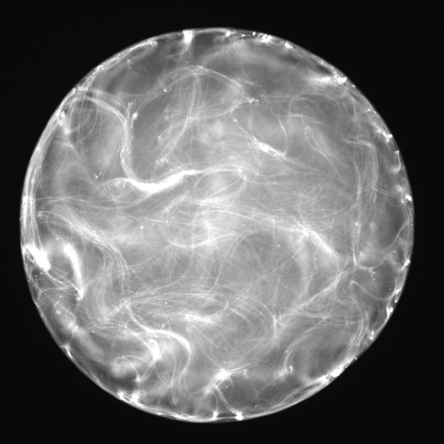
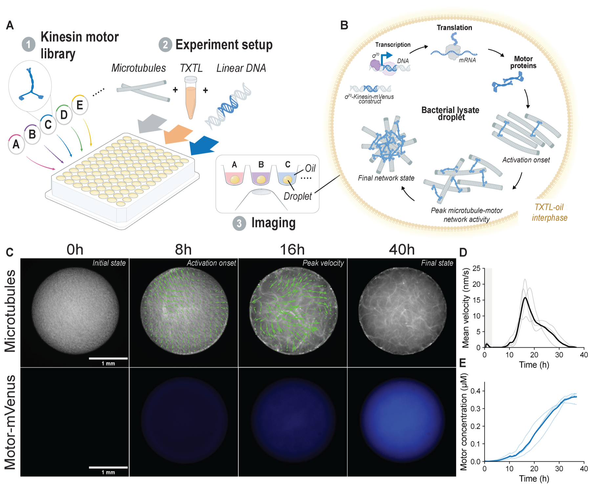
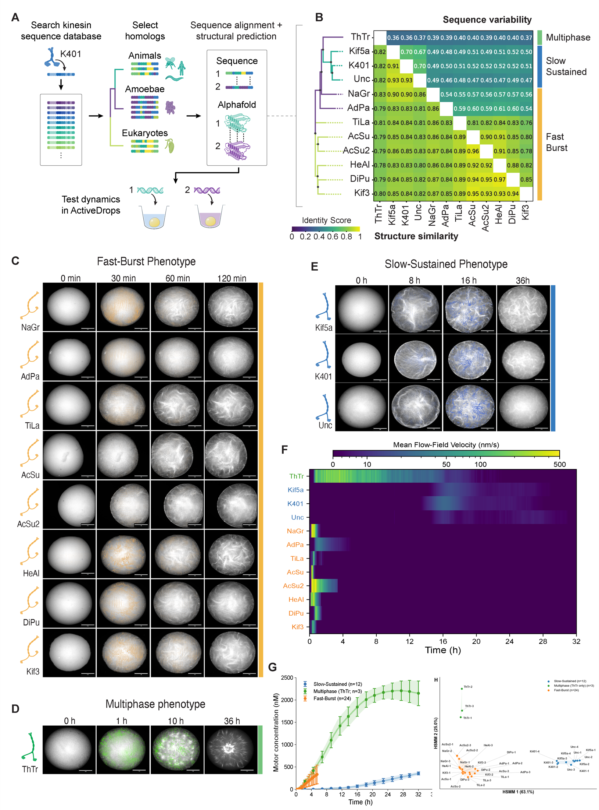
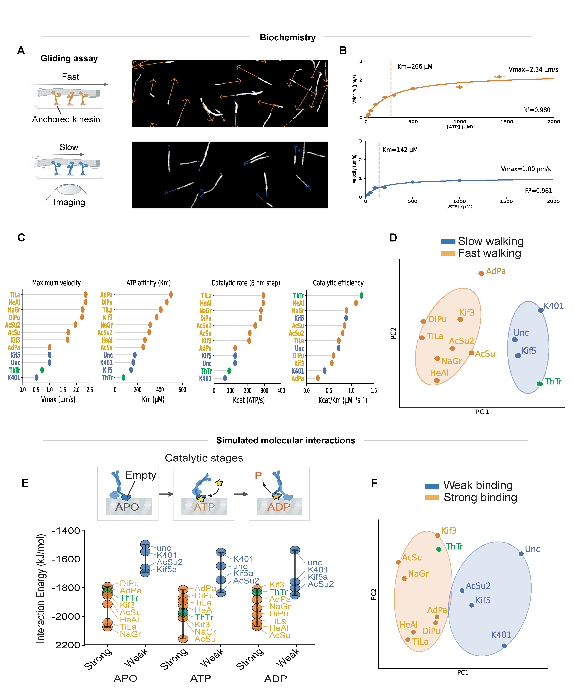
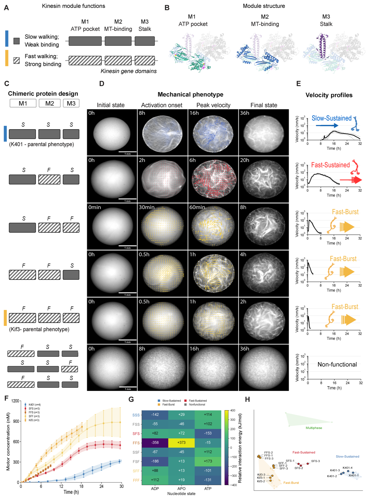
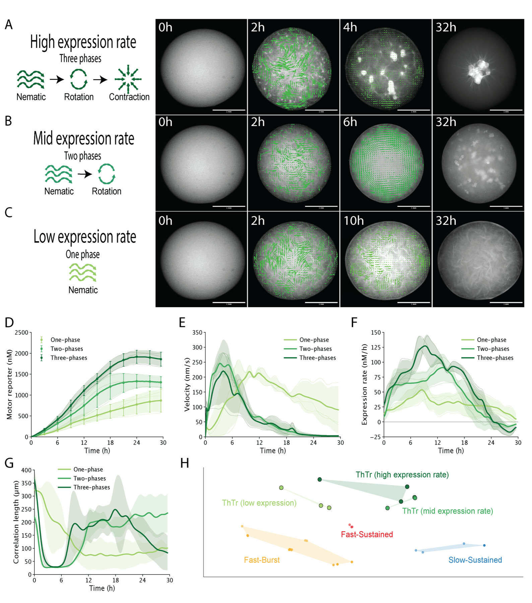

Motors move along filament tracks.
A molecular-scale mechanochemical cycle produces directed movement and force.

ActiveDROPSRead manuscriptReverse engineering cellular mechanics
Inside cells, motor proteins move along cytoskeletal filaments and collectively reorganize them. This motor–filament system is a foundational mechanical engine for intracellular organization, transport, division, shape change, and movement.
ActiveDROPS asks how genetic variation in a motor protein is translated into organized microtubule behavior through time.
The biological premise
Kinesins are motor proteins that convert ATP into movement along microtubules—polarized filaments that organize cell interiors. When many motors act on many filaments, their local forces become network-scale motion and structure.
A molecular-scale mechanochemical cycle produces directed movement and force.
Motor–filament systems can align, flow, rotate, bundle, or contract without a central controller.
Expression, signaling, crosslinkers, boundaries, and other regulators determine where, when, and how it is deployed.
The biological question
Eukaryotic genomes encode diverse families of motor proteins. Their sequences specify structures, biochemical properties, and interaction rules that shape the repertoire of mechanical behaviors a cell can generate.
The ActiveDROPS approach
A reconstructed motor–microtubule system connects DNA sequence to collective mechanics. The motor is produced inside the same droplet whose network dynamics are measured.
Linear DNA specifies a natural or engineered kinesin.
Bacterial cell-free machinery produces kinesin–mVenus.
Motor forces reorganize the supplied microtubule network.
Imaging estimates motor concentration and network mechanics.
A hidden semi-Markov model locates the complete mechanical phenotype in a shared behavior space.
What the HSMM adds
Using only the measured mechanics, the HSMM identifies network states, how long they last, and the order in which they occur. It compares complete time courses without being told which motor produced them.

The experimental logic
Each result creates the question answered by the next: identify mechanical diversity, establish its biochemical basis, and then change the motor architecture itself. Figure 4 is the central experiment; Figure 5 is a regulatory extension.
Figure 2
Natural motor diversity
Some motors begin after a delay and keep the network moving for many hours. Others activate quickly, move faster, and then lose activity early. We call these recurring patterns Slow-Sustained and Fast-Burst. ThTr behaves differently, progressing from aligned motion to whole-droplet rotation and then contraction.
These names describe the patterns observed in this panel of twelve kinesin-related motor sequences; they are not universal kinesin classes. A mechanics-only hidden semi-Markov model (HSMM) compares the complete time courses in a shared behavior space.
Watch the associated movie
Figure 3
Biochemical basis
ATP-dependent microtubule gliding assays and molecular simulations broadly preserve the separation between motors associated with Slow-Sustained and Fast-Burst behavior. The collective patterns therefore have a sequence-dependent biochemical basis.
Individual exceptions are informative: no single measurement explains a complete mechanical phenotype that integrates expression, stepping, attachment, force generation, and network remodeling.
Watch the associated movie
Figure 4 · Main discovery
Rewriting motor architecture
K401 and Kif3 were recombined across regions spanning ATP processing, microtubule binding, and force transmission. One chimera, SFS, activates rapidly like Kif3 but keeps the network moving for hours like K401. We call this combined behavior Fast-Sustained.
Its distinct position in the shared HSMM behavior space, together with context-dependent simulation results, shows that these regions work together rather than acting as interchangeable modules. Recombination can rewrite phenotype, but not every exchange is expected to do so predictably.
Watch the associated movie
Figure 5 · Secondary extension
Expression control
ThTr intrinsically progresses from aligned, nematic organization through network-wide rotation to inward contraction as it accumulates. Changing the DNA dosage changes its expression dynamics and selects where that existing progression stops.
At 1 nM the network remains nematic, at 10 nM it stabilizes in rotation, and at 100 nM it completes the progression to contraction. Fluorescence estimates tagged-motor concentration; it does not directly measure the folded, oligomerized, mechanically active fraction.
Watch the associated movie
The central answer
The ATP-processing pocket, microtubule-binding interface, and force-transmitting coiled coil jointly encode the timing and progression of microtubule-network self-organization.
Reconfiguring this coupled architecture can rewrite the collective dynamics generated by a motor protein. This is a foundation for a broader sequence-to-behavior map—not yet a complete predictive code.
Local movie library
The movies are hosted with this site rather than embedded from YouTube. Every web copy is silent, includes standard playback controls, and is paired with a plain-language description.
Figure 2 · Three complementary views
Several motors rapidly reorganize their microtubule networks and then lose activity within the early part of the experiment.
A side-by-side comparison shows bright microtubule networks in multiple droplets changing quickly during the early movie frames.
K401, Unc, and Kif5a activate later and maintain organized network motion for many hours.
Three droplets are shown side by side as their microtubule networks gradually organize and remain active at late time points.
The complete panel places the two recurring patterns beside the divergent ThTr progression.
Twelve droplets are shown simultaneously. Most follow one of two recurring timing patterns, while ThTr changes through aligned, rotational, and contractile organization.
The rest of the experimental arc
K401 motor accumulation and microtubule-network motion are measured together inside one droplet.
Four synchronized views show the microtubules, the fluorescent motor reporter, a composite image, and the measured velocity field alongside concentration and velocity traces.
Motor-scale movement is compared across ATP concentrations for motors associated with the two recurring patterns.
Fluorescent microtubules move across motor-coated surfaces in a matrix of movies arranged by motor group and ATP concentration.
K401, Kif3, and recombined motors reveal a Fast-Sustained mechanical phenotype not produced by either parent.
Droplets containing the two parental motors and four chimeras are compared at the same time point, making their distinct network organizations visible.
Changing ThTr DNA dosage selects whether the network remains aligned, reaches rotation, or continues to contraction.
Three droplets at different DNA dosages are shown side by side as they stop at different points along the same ordered progression.
In brief
ActiveDROPS connects motor-coding DNA to a time-resolved mechanical phenotype through cell-free expression, network imaging, and a mechanics-only HSMM behavior space.
Natural motor sequences generate distinct collective patterns, and motor-scale experiments reveal their biochemical basis. Recombining coupled regions of motor architecture creates a Fast-Sustained phenotype absent from both parents.
The central result shows that a motor's ATP-processing, microtubule-binding, and force-transmitting architecture works together to encode the temporal organization of the network.